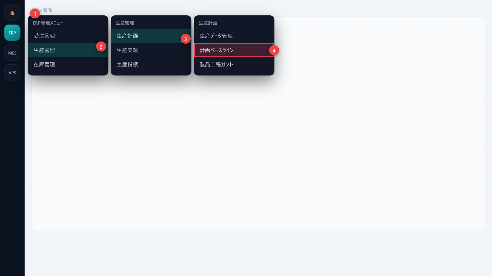
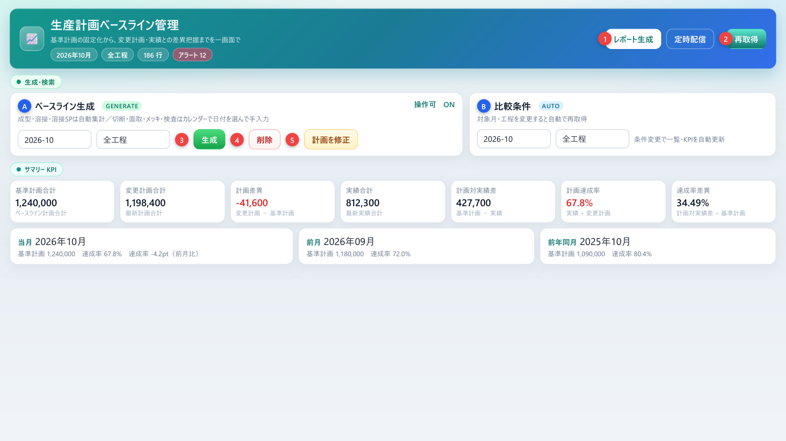
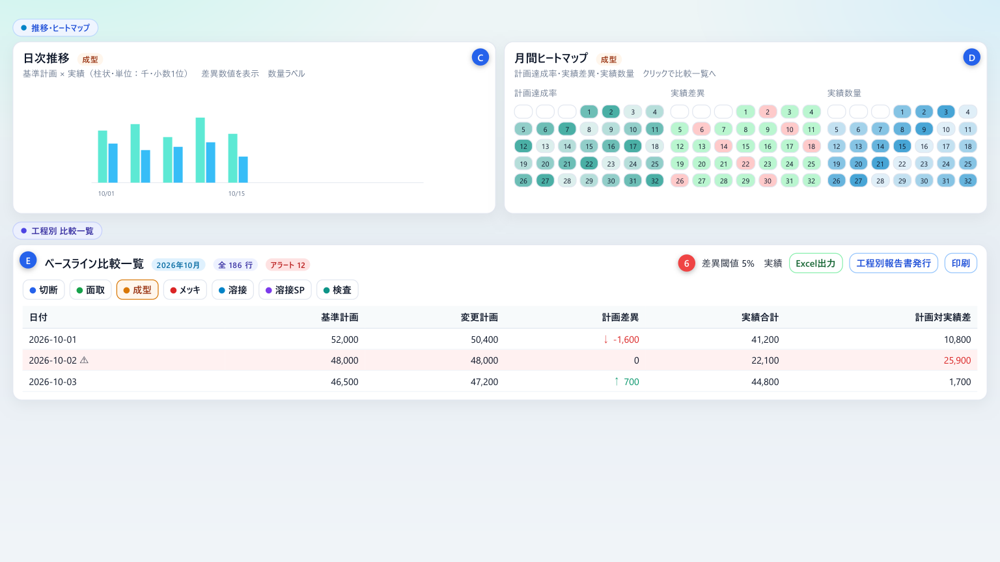
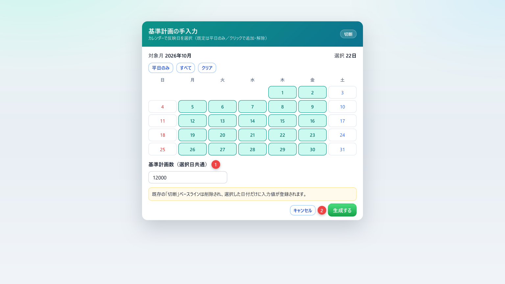
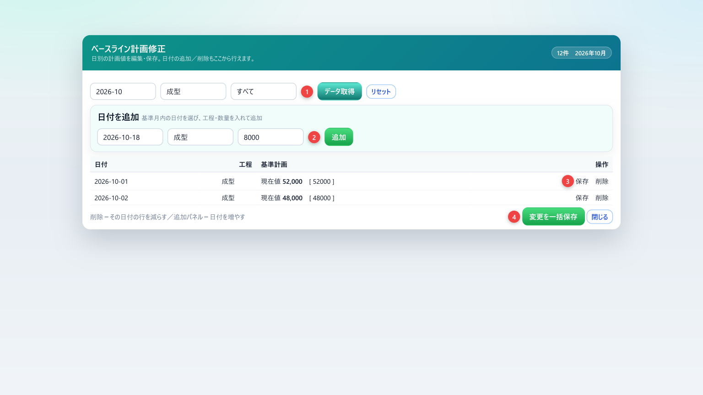
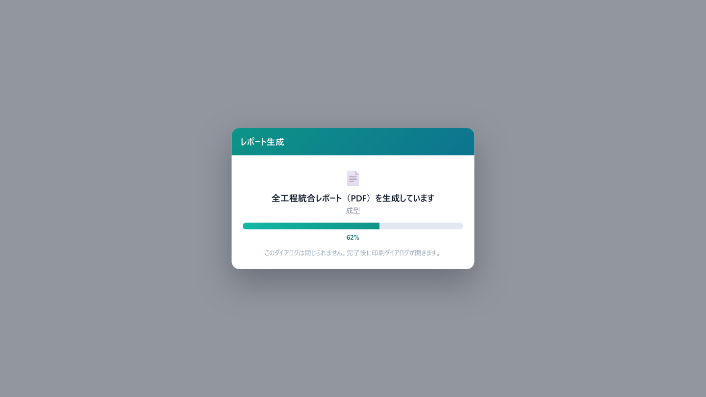

基準計画の固定化から、変更計画・実績との差異把握までを一画面で
「生産計画ベースライン管理」は、ある基準月の生産計画をベースライン（基準計画）として固定し、その後の変更計画や実績との差を工程別に見る画面です。
| できること | 説明 |
|---|---|
| 生成・削除 | 基準月・工程のベースラインを作る、または消す。生成エリアはロックで誤操作を防ぎます |
| 手入力 | 切断・面取・メッキ・検査は、カレンダーで日を選んで同じ数量を登録します |
| 比較 | 基準計画・変更計画・実績・差異を日次で見ます。条件を変えると自動で読み直します |
| KPI・期間比較 | 当月の合計と、前月・前年同月の達成率を並べます |
| チャート | 選んでいる工程タブの日次推移と、月間ヒートマップを表示します |
| 出力 | Excel、工程をまとめたレポート PDF、表示中タブの印刷 |
| 用語 | 意味 |
|---|---|
| 基準計画 | ベースライン生成（または手修正）で固定した日次の計画数量 |
| 変更計画 | いまの計画数量。切断・面取・メッキ・検査は基準計画と同じ。成型は molding_plan。溶接／溶接SP は welding_actual_plan |
| 計画差異 | 変更計画 − 基準計画。プラスは増加、マイナスは減少 |
| 計画対実績差 | 基準計画 − 実績。実績が無い日は「-」 |
| 溶接SP | 製品名 FE-7・CH2 RR。溶接とは別工程として集計 |

/erp/production/plan-baseline です。ヘッダーの ? から本書を開けます。


| No | エリア | 説明 |
|---|---|---|
| A | ベースライン生成 | 基準月・工程、生成／削除／計画を修正。スイッチでロック |
| B | 比較条件 | 対象月・工程。変更すると一覧と KPI を自動更新 |
| C | 日次推移 | 選択中工程タブの基準計画と実績（単位: 千） |
| D | 月間ヒートマップ | 計画達成率・実績差異・実績数量。日付クリックで一覧へ |
| E | 比較一覧 | 工程タブ、日次表、アラート、Excel／報告書／印刷 |
| No | ボタン | 動き | 参照 |
|---|---|---|---|
| 1 | レポート生成 | 比較がある工程を 1 つの PDF にまとめ、印刷ダイアログを開く | 第 11 章 |
| 2 | 再取得 | 比較条件で一覧・KPI を読み直す | 第 6 章 |
| 3 | 生成 | ロック ON のとき、基準月のベースラインを作る | 第 4・5 章 |
| 4 | 削除 | その月・工程のベースラインを消す（取り消せない） | 第 4 章 |
| 5 | 計画を修正 | 日別数量の修正ダイアログを開く | 第 10 章 |
| 6 | Excel出力 | 表示中の比較を .xlsx でダウンロード | 第 11 章 |
初期状態はロック中です。スイッチを ON（「操作可」）にしてから 生成 削除 計画を修正 を使います。
工程が切断・面取・メッキ・検査のとき、生成 を押すと「基準計画の手入力」が開きます。

| 窗体項目 | 説明 |
|---|---|
| 工程チップ | 右上に対象工程（切断／面取／メッキ／検査） |
| 対象月・選択日数 | 生成エリアの基準月。選択中の日数 |
| 平日のみ すべて クリア | 既定は平日。日付セルのクリックで追加・解除 |
| 基準計画数（選択日共通） | 選んだ日すべてに同じ数量。0 以上 |
| 注意文 | 既存のその工程ベースラインは削除され、選択日だけに登録される |
| 生成する／キャンセル | 実行または閉じる |
比較条件に検索ボタンはありません。対象月・工程を変えると自動で読み直します。すぐ読み直すときはヘッダーの 再取得 です。生成・削除のあと、比較条件は生成側の月・工程に同期します。
| カード | 意味 |
|---|---|
| 基準計画合計 | ベースライン計画合計 |
| 変更計画合計 | 最新計画合計 |
| 計画差異 | 変更計画 − 基準計画 |
| 実績合計 | 最新実績合計 |
| 計画対実績差 | 基準計画 − 実績 |
| 計画達成率 | 実績 ÷ 変更計画 |
| 達成率差異 | 計画対実績差 ÷ 基準計画合計 |
その下に当月・前月・前年同月の基準計画と達成率を並べます。当月には前月比の達成率差が出ます。変更計画合計が 0、または実績が無いときは達成率は「-」です。
棒は基準計画と実績です。単位は千、小数第 1 位です。差異は実績 − 基準計画で、実績が無い日は出しません。差異数値を表示と数量ラベルで数字の出し入れができます。
| パネル | 見方 |
|---|---|
| 計画達成率 | 低い日ほど薄く、高い日ほど濃い |
| 実績差異 | 単位は千。負は赤寄り、正は緑寄り |
| 実績数量 | 単位は千 |
日付のマスをクリックすると、下の比較一覧でその日の行まで移動し、しばらく強調されます。
データが 1 件以上ある工程だけがタブになります。並びは 切断、面取、成型、メッキ、溶接、溶接SP、検査 です。タブにアラートがあると件数の印が付きます。
| 列 | 内容 |
|---|---|
| 日付 | YYYY-MM-DD。アラートの日は警告。マウスを置くと理由 |
| 基準計画 | 生成時に固定した値 |
| 変更計画 | いまの計画。切断・面取・メッキ・検査は基準計画と同じ |
| 計画差異 | 変更計画 − 基準計画 |
| 実績合計 | 在庫取引の日次実績。無い日は「-」 |
| 計画対実績差 | 基準計画 − 実績 |
差の絶対値が閾値（%）を超えた行を強調します。初期値は 5%、監視は実績のみ ON、計画は OFF です。アラートのみにするとそのタブはアラート行だけになります。設定はブラウザに保存されます。
ロックを ON にし、計画を修正 を押すと「ベースライン計画修正」が開きます。基準月と工程は生成エリアの値が初期値です。

| 窗体項目 | 説明 |
|---|---|
| 基準月・工程・表示 | 表示は すべて／編集あり／比較アラート日 |
| データ取得／リセット | 読み直し。リセットは月を戻し工程を空にして一覧を空にする |
| 日付を追加 | 基準月内の日付、工程、0 以上の数量。追加 |
| 行の保存／削除 | その行だけ即時保存、またはその日・工程の行を削除（確認後、取り消せない） |
| 変更を一括保存 | 現在値と違う行だけ順に保存。差が無いときは「変更された項目がありません」 |
| 閉じる | 未保存の入力は残りません |
ヘッダーの レポート生成 と一覧の 工程別報告書発行 は、比較データがある工程を 1 つの PDF にまとめてサーバーへ保存し、そのあとブラウザの印刷ダイアログを開きます。処理中は「レポート生成」の進捗が出て、閉じられません。

定時配信 は報告センターのスケジュールタブを開きます。毎週金曜 19:00 に自動生成し、メールに添付します。
一覧の Excel出力 は .xlsx をダウンロードします。ファイル名の例は 生産計画ベースライン比較_2026-10.xlsx です。シートはサマリー、工程ごと、アラートがあるときはアラート一覧です。
一覧の 印刷 は、いま開いている工程タブの表だけをブラウザ印刷します。行が無いときは「印刷するデータがありません」です。
ボタンは見えていても、生産計画モジュールの操作権限が無いと「生産計画の操作権限がありません」と出て処理は始まりません。
| 権限 | できる操作 |
|---|---|
| 参照 | 画面を開く、比較条件、KPI、チャート、一覧の閲覧 |
| 登録 | 生成、手入力の生成、変更の一括保存 |
| 編集 | 計画修正の行保存、日付の追加 |
| 削除 | 月・工程の削除、計画修正での行削除 |
| エクスポート | レポート生成、工程別報告書発行、Excel出力、印刷 |
| メッセージ | 意味と対処 |
|---|---|
| 対象月を選択してください | 基準月が空で生成または削除した |
| 反映する日付を1日以上選択してください | 手入力で日が 0 |
| 基準計画数を入力してください（0以上） | 数量が空、または 0 未満 |
| ベースラインを生成しました | 生成成功 |
| ベースラインを削除しました | 削除成功。取り消せない |
| 比較データの取得に失敗しました | 再取得する |
| 既存行の数量を更新しました。保存してください | 同じ日・工程がある。行の保存か一括保存が必要 |
| 変更された項目がありません | 一括保存時に差分が無い |
| 生産計画の操作権限がありません | 権限が無い。管理者に依頼 |
| 統合レポートPDFを保存しました | サーバ保存成功。続けて印刷ダイアログ |
| Excelを出力しました | ダウンロード成功 |
| 質問 | 答え |
|---|---|
| 検索ボタンはどこですか | ありません。対象月・工程を変えると自動で読み直します |
| 操業度カードはどこですか | 現行のこの画面にはありません。設備の操業度は成型計画など各計画画面で確認してください |
| 手入力の土日が消えました | 生成時の初期選択は平日だけです。土日が必要ならクリックして選んでください |
| 達成率が「-」です | 変更計画の合計が 0、または実績が無いときです |
| 項目 | 内容 |
|---|---|
| 文書名 | 生産計画ベースライン管理 操作説明書 |
| 対象 | ERP → 生産管理 → 生産計画 → 計画ベースライン |
| 画面パス | /erp/production/plan-baseline |
| 版数 | 第 2.0 版 |
| 作成日 | 2026年10月12日 |
| スタイル正本 | 月受注管理 操作説明書（order-monthly.pdf）に準拠 |
| 言語 | 日本語 |
| 日付 | 版 | 内容 |
|---|---|---|
| 2026-10-12 | 2.0 | 月受注管理と同スタイルで全面改訂。メニュー・画面構成・手入力・計画修正・レポート進捗の図と窗体説明を追加 |
| 2026-10-09 | 1.0 | 現行画面に合わせて初版（様式見直しのため 2.0 に置換） |
以上。ボタン名は 2026年10月12日時点の画面表示と一致します。